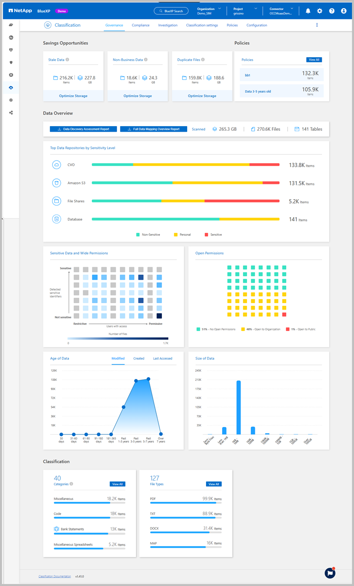
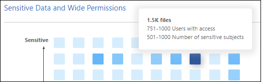

Richiedi modifiche alla documentazione
Richiedi modifiche alla documentazione Modifica questa pagina
Modifica questa pagina Scopri come collaborare
Scopri come collaborareVisualizzazione dei dettagli di governance relativi ai dati memorizzati nell’organizzazione
Collaboratori
Ottieni il controllo dei costi relativi ai dati sulle risorse di storage della tua organizzazione. La classificazione BlueXP identifica la quantità di dati obsoleti, dati non aziendali, file duplicati e file molto grandi nei sistemi, in modo da poter decidere se rimuovere o tierare alcuni file in uno storage a oggetti meno costoso.
Inoltre, se si prevede di migrare i dati da posizioni on-premise al cloud, è possibile visualizzare le dimensioni dei dati e se alcuni di essi contengono informazioni sensibili prima di spostarli.
Dashboard di governance
La dashboard di governance fornisce informazioni che consentono di aumentare l’efficienza e controllare i costi relativi ai dati memorizzati nelle risorse di storage.

Opportunità di risparmio
È possibile esaminare gli elementi nell’area Saving Opportunities per verificare se sono presenti dati da eliminare o da assegnare allo storage a oggetti meno costoso. Fare clic su ciascun elemento per visualizzare i risultati filtrati nella pagina di analisi.
-
Dati obsoleti - dati modificati più di 3 anni fa.
-
Dati non aziendali - dati considerati non correlati al business, in base alla categoria o al tipo di file. Ciò include:
-
Dati dell’applicazione
-
Audio
-
Eseguibili
-
Immagini
-
Registri
-
Video
-
Varie (categoria generale "Altro")
-
-
File duplicati - file duplicati in altre posizioni nelle origini dati che si stanno eseguendo la scansione. "Scopri quali tipi di file duplicati vengono visualizzati".
- NOTA
-
Se una qualsiasi delle origini dati implementa il tiering dei dati, i dati vecchi che risiedono già nello storage a oggetti possono essere identificati nella categoria dati obsoleti.
=== Policy con il maggior numero di risultati
Nell’area Policies, i criteri con il maggior numero di risultati vengono visualizzati in cima all’elenco. Fare clic sul nome di una policy per visualizzare i risultati nella pagina delle analisi. Fare clic su View All (Visualizza tutto) per visualizzare l’elenco di tutte le policy disponibili.
Fare clic su "qui" Per ulteriori informazioni sulle policy.
Panoramica dei dati
La sezione Data Overview fornisce una rapida panoramica di tutti i dati sottoposti a scansione. Fare clic sul pulsante per scaricare un report di mappatura dei dati completo che include capacità di utilizzo, età dei dati, dimensione dei dati e tipi di file per tutti gli ambienti di lavoro e le origini dati. Vedere Report di mappatura dei dati per informazioni dettagliate su questo report.
Principali repository di dati elencati in base alla sensibilità dei dati
L’area Top Data Repository per livello di sensibilità elenca i primi quattro repository di dati (ambienti di lavoro e origini dati) che contengono gli elementi più sensibili. Il grafico a barre per ciascun ambiente di lavoro è suddiviso in:
-
Dati non sensibili
-
Dati personali
-
Dati personali sensibili
È possibile passare il mouse su ciascuna sezione per visualizzare il numero totale di elementi in ciascuna categoria.
Fare clic su ciascuna area per visualizzare i risultati filtrati nella pagina di analisi in modo da poter analizzare ulteriormente.
Dati elencati in base alla sensibilità e alle autorizzazioni estese
L’area dati sensibili e permessi estesi fornisce una mappa termica dei file che contengono dati sensibili (inclusi dati personali sensibili e sensibili) e che sono eccessivamente permissivi. In questo modo è possibile individuare i rischi associati ai dati sensibili.
La classificazione dei file dipende dal numero di utenti autorizzati ad accedere ai file sull’asse X (dal più basso al più alto) e dal numero di identificatori sensibili all’interno dei file sull’asse Y (dal più basso al più alto). I blocchi rappresentano il numero di file che corrispondono agli elementi degli assi X e Y. I blocchi di colore più chiaro sono buoni, con meno utenti in grado di accedere ai file e con meno identificatori sensibili per file. I blocchi più scuri sono gli elementi che potresti voler esaminare. Ad esempio, la schermata seguente mostra il testo del passaggio del mouse per il blocco blu scuro. Indica che sono disponibili 1,500 file a cui hanno accesso 751-100 utenti e 501-100 identificatori sensibili per file.

È possibile fare clic sul blocco desiderato per visualizzare i risultati filtrati dei file interessati nella pagina di analisi, in modo da poter analizzare ulteriormente.
Se non si è integrato un servizio di identità con la classificazione BlueXP, in questo pannello non viene visualizzato alcun dato. "Scopri come integrare il servizio Active Directory con la classificazione BlueXP".

|
Questo pannello supporta i file in condivisioni CIFS, OneDrive e origini dati SharePoint. Attualmente non è disponibile alcun supporto per database, Google Drive, Amazon S3 e storage a oggetti generici. |
Dati elencati in base ai tipi di autorizzazioni aperte
L’area Open Permissions mostra la percentuale per ciascun tipo di permessi esistenti per tutti i file sottoposti a scansione. Il grafico mostra i seguenti tipi di autorizzazioni:
-
Nessuna autorizzazione aperta
-
Aperto all’organizzazione
-
Aperto al pubblico
-
Accesso sconosciuto
È possibile passare il mouse su ciascuna sezione per visualizzare il numero totale di file in ciascuna categoria. Fare clic su ciascuna area per visualizzare i risultati filtrati nella pagina di analisi in modo da poter analizzare ulteriormente.
Età dei dati e dimensioni dei grafici dei dati
È possibile esaminare gli elementi nei grafici Age e Size per verificare se sono presenti dati da eliminare o da assegnare allo storage a oggetti meno costoso.
È possibile passare il mouse su un punto dei grafici per visualizzare i dettagli relativi all’età o alle dimensioni dei dati in tale categoria. Fare clic per visualizzare tutti i file filtrati in base all’età o all’intervallo di dimensioni.
-
Age of Data graph - classifica i dati in base all’ora in cui sono stati creati, all’ultima volta in cui sono stati utilizzati o all’ultima volta in cui sono stati modificati.
-
Dimensione del grafico dei dati - classifica i dati in base alle dimensioni.
- NOTA
-
Se una qualsiasi delle origini dati implementa il tiering dei dati, i dati vecchi che risiedono già nello storage a oggetti possono essere identificati nel grafico Age of Data.
=== Classificazioni dei dati più identificate
L’area Classification fornisce un elenco dei più identificati "Categorie", "Tipi di file", e. "Etichette AIP" nei dati sottoposti a scansione.
Categorie
Le categorie possono aiutarti a capire cosa accade con i tuoi dati mostrando i tipi di informazioni di cui disponi. Ad esempio, una categoria come "curriculum" o "contratti dipendenti" può includere dati sensibili. Quando si analizzano i risultati, è possibile che i contratti dei dipendenti siano memorizzati in una posizione non sicura. A questo punto, è possibile correggere il problema.
Vedere "Visualizzazione dei file in base alle categorie" per ulteriori informazioni.
Tipi di file
La revisione dei tipi di file consente di controllare i dati sensibili, poiché alcuni tipi di file potrebbero non essere memorizzati correttamente.
Vedere "Visualizzazione dei tipi di file" per ulteriori informazioni.
Etichette AIP
Se si è abbonati ad Azure Information Protection (AIP), è possibile classificare e proteggere documenti e file applicando etichette ai contenuti. La revisione delle etichette AIP più utilizzate assegnate ai file consente di visualizzare le etichette più utilizzate nei file.
Vedere "Etichette AIP" per ulteriori informazioni.
Report di mappatura dei dati
Il Data Mapping Report fornisce una panoramica dei dati memorizzati nelle origini dati aziendali per assisterti nelle decisioni relative a migrazione, backup, sicurezza e processi di conformità. Il report elenca prima una panoramica che riepiloga tutti gli ambienti di lavoro e le origini dati, quindi fornisce un’analisi dettagliata per ciascun ambiente di lavoro.
Il report contiene le seguenti informazioni:
| Categoria | Descrizione |
|---|---|
Capacità di utilizzo |
Per tutti gli ambienti di lavoro: Elenca il numero di file e la capacità utilizzata per ciascun ambiente di lavoro. Per ambienti di lavoro singoli: Elenca i file che utilizzano la capacità maggiore. |
Età dei dati |
Fornisce tre grafici e grafici per la data di creazione, l’ultima modifica o l’ultimo accesso ai file. Elenca il numero di file e la relativa capacità utilizzata, in base a determinati intervalli di date. |
Dimensione dei dati |
Elenca il numero di file presenti in determinati intervalli di dimensioni negli ambienti di lavoro. |
Tipi di file |
Elenca il numero totale di file e la capacità utilizzata per ciascun tipo di file memorizzato negli ambienti di lavoro. |
Creazione del report di mappatura dei dati
Questo report viene generato dalla scheda Governance della classificazione BlueXP.
-
Dal menu BlueXP, fare clic su Governance > Classification.
-
Fare clic su Governance, quindi sul pulsante Data Mapping Report.

La classificazione BlueXP genera un report in formato PDF che è possibile rivedere e inviare ad altri gruppi in base alle esigenze.
Se il report è più grande di 1 MB, il file PDF viene conservato nell’istanza di classificazione di BlueXP e viene visualizzato un messaggio a comparsa relativo alla posizione esatta. Quando la classificazione BlueXP viene installata su una macchina Linux in sede o su una macchina Linux implementata nel cloud, è possibile accedere direttamente al file PDF. Quando la classificazione BlueXP viene implementata nel cloud, è necessario eseguire l’SSH nell’istanza di classificazione BlueXP per scaricare il file PDF. "Scopri come accedere ai dati sull’istanza di Classification".
Nota: È possibile personalizzare il nome della società visualizzato nella prima pagina del report dalla parte superiore della pagina di classificazione di BlueXP facendo clic su  Quindi fare clic su Cambia nome azienda. La volta successiva che si genera il report, questo includerà il nuovo nome.
Quindi fare clic su Cambia nome azienda. La volta successiva che si genera il report, questo includerà il nuovo nome.
Report sulla valutazione del rilevamento dei dati
Il Data Discovery Assessment Report fornisce un’analisi di alto livello dell’ambiente sottoposto a scansione per evidenziare i risultati del sistema e mostrare le aree di interesse e le potenziali fasi di correzione. I risultati si basano sia sulla mappatura che sulla classificazione dei dati. L’obiettivo di questo report è quello di sensibilizzare l’utente su tre aspetti significativi del set di dati:
| Funzione | Descrizione |
|---|---|
Problemi di governance dei dati |
Un’immagine dettagliata di tutti i dati in tuo possesso e delle aree in cui puoi ridurre la quantità di dati per risparmiare sui costi. |
Esposizioni alla sicurezza dei dati |
Aree in cui i dati sono accessibili ad attacchi interni o esterni a causa di ampie autorizzazioni di accesso. |
Lacune nella compliance dei dati |
Dove si trovano le informazioni personali o sensibili per motivi di sicurezza e DSAR (richieste di accesso dei soggetti). |
Dopo la valutazione, questo report identifica le aree in cui è possibile:
-
Riduci i costi di storage modificando la policy di conservazione o spostando o eliminando determinati dati (dati obsoleti, duplicati o non aziendali)
-
Proteggi i tuoi dati che dispongono di ampie autorizzazioni rivedendo le policy di gestione dei gruppi globali
-
Proteggi i tuoi dati personali o sensibili trasferendo le informazioni personali in archivi di dati più sicuri
Creazione del report di valutazione del rilevamento dei dati
Questo report viene generato dalla scheda Governance della classificazione BlueXP.
-
Dal menu BlueXP, fare clic su Governance > Classification.
-
Fare clic su Governance, quindi sul pulsante Data Discovery Assessment Report.

La classificazione BlueXP genera un report in formato PDF che è possibile rivedere e inviare ad altri gruppi in base alle esigenze.
Nota: È possibile personalizzare il nome della società visualizzato nella prima pagina del report dalla parte superiore della pagina di classificazione di BlueXP facendo clic su Quindi fare clic su Cambia nome azienda. La volta successiva che si genera il report, questo includerà il nuovo nome.